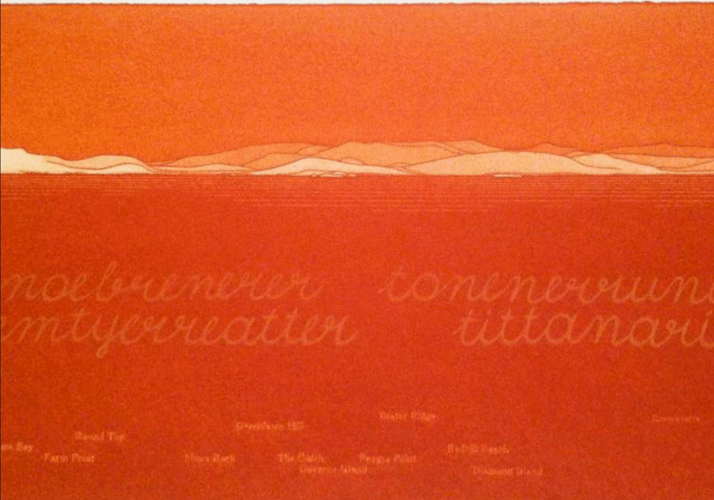

I’ve recently found myself staring repeatedly at a large (3’x 4’) painting of a room. It dominates the largest wall of a small city condo. It was made by the London-based painter John Monks and is thematically linked to a subject that has brought him considerable attention.
Physically the painting represents a fictitious space much larger than the one it occupies in the reality of my tiny living room. This may seem obvious, but it draws my looking out of my little space and into a larger world. This is the main technical function of the painting. Apart from the rich colour I’m drawn in by Monks’ perspective construction. Actual space is supplanted by his imaginative fictional space. There’s nothing new in any of this. It’s traditional Renaissance spatial construction. A framed illusion. I’ve been happily drawn in 10,000 times to as many paintings.
The appeal of this painting has little to do with its space making perspective. There is a subject here and it stimulates the life of the imagination. For me this painting concerns time. As in most of Monks’ architectural imaginings there is a distinct sense of being drawn into history. Time past. There are never figures. Human presence is always suggested by objects and furniture. Light streams in from offstage. These fictional spaces have a strong sense of narrative in the descriptive way of historical novels.
There are things to be described. Things collected and discarded. Things forgotten. As light (always a major presence and often suggesting an almost extra-terrestrial force!) enters I sense actors having left a stage. There is an irony here in that for all the figural absence there remains a very real presence. The artist. The heavily layered use of a palette knife brushed impasto application and tooled lines incised across wet paint, all speak of the artist’s role. The smooth textured floor is possibly the result of sprayed turpentine.
We are invited to imagine here. The emphatic red and green contrast of a suggested exterior (a landscape?) and textured red decaying walls for me suggest a tropical setting as does the reflected louver window. The overall oppressive red heat of the interior is balanced by reflected blue green light in a large mirror on the right.
Another aspect of time portrayed here is the presence of decay. The often-grand spaces Monks shows us have had a life. In this case a stripped bed, electric fan and porcelain basin have been left behind. Torn drapery tumbles on a chair beneath the window. Again, human presence is implied. This is a room with history as one would discover in an isolated ruined mansion. The psychological and physical weave into a distinct image. There is a sense of social ruin. Not mere nostalgia. The social grandeur implied by these vacated spaces gives me a sense of long vanished privileged eras. There is something very British here. In this and many of Monks’ paintings there is a parallel vanishing point. It is to be found in his sense of time. In essence he gives us both of those well-worn iconographic tropes: the memento mori and the vanitas.
In this sense the painting is one on which to meditate as if it were a 17th century Dutch still-life.
Andrew Gregg Website John Monks Gallery Long and RyleWhen Goya suddenly arrives in the landscape of contemporary art the scale of his achievement creates an unavoidably serious perspective. The NGV magazine cover describes a comprehensive exhibition of Goya’s prints (supported by drawings from the Prado), ‘Goya: Art Truth and Human Nature’. Whenever Goya is mentioned in art histories, catalogues, and reviews the word ‘truth’ is sure to follow. There is no doubt (is that part of what truth means?) that Goya’s four great etching series, Los Caprichos, The Disasters of War, La Tauromaquia and Los Disparates form an unparalleled account of a great artist’s view of human folly and violence. We are indeed a violent species and our history is largely stained by folly. We seem to have little appetite for learning from history and it's our central folly that we keep repeating ourselves leaving little place for memory. No doubt our greatest folly is unfolding now in the shape of climate change. Our best novelists, historians and journalists keep trying but much of their good work is largely ignored and only appreciated by what are often described as elites. The violent waste and stupidity Goya depicts remains with us albeit in different guises.

Goya. ’And there is no remedy’ Pl.15, The Disasters of War, (etching) 1810 - 15
We may not have an inquisition but we have all manner of dangerous irrational organizations. Extremists both left and right are destroying civil political debate. We also have the internet and television which drenches and blurs our thinking more than we are prepared to admit. We only have to observe the political arena. The first casualty of war may be truth but around the world ‘truthiness’, spin, ‘alternative facts’ and deception are common place. (Goya’s most famous print 'The Sleep of Reason Produces Monsters' is prominently displayed at the beginning of the exhibition.) The ‘truth’ has become just another view among many equals. This is nowhere more blatantly apparent than in politics. Goya’s dim view of human nature as depicted in the etchings seems remorseless and raw. Two hundred years later he is still tapping into the violence of modern high tech weaponry that kills civilians with increasing efficiency. Drone surveillance and bombing has taken warfare to new levels. Our world remains Goya’s world.
Goya’s great 17th century predecessor Rembrandt was his beloved hero. Goya’s print making skill and inventiveness owe a lot to Rembrandt’s tenebrism and drawing. Rembrandt’s unquestioned towering universality lies in part in his profound understanding of the joys and sorrows in that ‘foul rag and bone shop of the heart’ (Yeats). He is able to pity and forgive. I suspect that what makes Goya ‘modern’ in his lack of pity. His vision is often described as reportage in the modern sense. After the 20th century and the two world wars it is surely photography and film alone that can carry the load visually. Painting and drawing can no longer bear witness in the way of Goya. Hannah Arendt’s phrase ‘The Banality of Evil’ comes to mind. Her message in covering the Eichmann trial in 1963 was that mass murder and genocide, on an undreamed scale can become every day and banal, bureaucratically routine. Carrying out orders. After the death camps Robert Hughes memorably said ‘art had nothing to say’.
Walking through the NGV Goya exhibition made me feel that he was still able to speak to us. More perhaps in his images of human folly rather than scenes of violence. We’ve become numb to violence - perhaps film and TV have done this. Goya’s small fragile works on paper remain crucial in the 21st century because they remind us not to look away. They don’t celebrate violence (think Hollywood). His work endures because it supplies universal, unvarnished truth. And truth in a digital world is becoming evermore fragile.
Andrew Gregg Website Andrew Gregg Instagram National Gallery of Victoria
I first encountered Giambattista Tiepolo’s The Banquet of Cleopatra (1743-44) as a teenager. Growing up hundreds of miles north of rarely visited Melbourne, my idea of grandeur was a massive ancient river gum beside the Murray. I never really recovered from that first visit to the NGV. I had suddenly been introduced to and then pulled into the world of European art and history. It all seemed so distant and exotic. The Tiepolo became a chestnut to be visited many times over the years. The point I’d like to make here is my relationship with the painting has not been static. This may be a familiar story.
A short insightful piece on the painting in the July/August 2020 NGV Magazine by novelist Peggy Frew, set me thinking about lifelong relationships with individual works of art. It is true that our first lasting response to a work of art (especially an impressive one) is going to be subjective. We respond without the scaffolding and contexts of art history. We may respond first to the surface and superficialities and, if it’s a figurative work, to the most obvious gestures. Or it might be its light and colour.
I had little knowledge of the impossibility of Tiepolo’s ‘stagy’ representation. I remained in the grip of its invention. I was not looking for profundity. I could barely understand such a word anyway. I did recognise that this big painting belonged to a genre quite different from the darker works in other rooms at the gallery. It most obviously was not concerned with the verities of that favourite Australian subject, landscape.
I learned that Tiepolo, the last great Italian decorator, sold The Banquet to an aristocratic collector who clearly still subscribed to the world of royalty and absolute authority. (I later travelled to Wurzburg and Madrid to see more of Tiepolo's impossibly impressive ceiling paintings.) Later it passed to another kind of absolutism, Stalin’s Soviet Union. The NGV purchase (1933) gave Stalin much needed western currency for his industrial plans. The painting, like the prized pearl in Cleopatra’s hand, became a trophy. All this seemed not to matter. Nor did it matter that Tiepolo’s blonde opera star (in fanciful 18th century costume) vision of Cleopatra bears little resemblance to her hook-nosed likeness on ancient coinage. There is little evidence that Cleopatra was another Nefertiti. Despite all the filters of contemporary judgement and interpretation one indelible fact remains. Tiepolo’s audacious imagination may be the real subject here. It is easily understood that the painting is a fantasy based on various traditions and sources. Art history establishes this. Art history can also help establish Tiepolo’s place in the ranked pantheon of painting.
So in the end the painting has for me acquired many layers of meaning. I now see it as a decoration of freewheeling, virtuosic creativity and fluid imagination. Like all great artists Tiepolo employed strategies for success. I no longer see pompous grandeur as I once did, but I marvel at the brilliant facility of a much in demand painter who traded in what today looks like crazy dreams.
Andrew Gregg Website Andrew Gregg Instagram National Gallery of Victoria
Not long ago I was commissioned to provide a 360° drawing of a swathe of nondescript landscape near Rockbank on the outer NW fringe of Melbourne. The 15 metre long drawing is finished and has been reproduced to withstand all weather conditions. It has been installed atop a viewing tower where I recorded the view. (See Tower Project Video) The tower sits in one of several remarkable playgrounds in a new housing development that will essentially form a new suburb. 70,000 houses are to be built with all the usual conveniences of a new community. My drawing (now annotated with modern landmark place names) is intended to provide a sense of place. It is part of Melbourne’s inevitable population growth. It will overtake Sydney in the near future. Carved into the masonry around the base of this tower are the names of the long gone first nations owners (Wrundjeri, Boon, Wurrung among others) who inhabited this land for thousands of years before colonial dispossession.
My modest drawing has little to say to this. It essentially depicts a barren landscape bearing the environmental scars of 180 years of sheep and cattle farming. Gone are the nourishing creeks and stands of mighty eucalypts and associated undergrowth. Gone is a well understood and well tended landscape. To be fair there have been efforts to restore parts of this damaged land. Kangaroos remain. I joined a group of 100+ locals in a massive tree planting designed to restore part of a nearby waterway. The new development has a series of rain gardens and constructed wetlands that address polluted run off. However in the longer historical picture the story is one of loss. Once there was a paradise.
An old friend, Melbourne artist Marshall White alerted me to the work of the late Bea Maddock. Maddock has earned an important place in Australian contemporary art history as a teacher and visual artist. Her most celebrated work, Terra Spiritus is a cycle of 51 etchings. It is in all of Australia’s major public collections. In 1993 she began a six year odyssey to depict the entire (360°) coastline of Tasmania. She began by boat but soon moved to topographical maps. The bright orange colour of each print was personally ground from Tasmanian rocks once considered sacred. Large cursive text is imposed on each coastal view. The tribal names of original indigenous owners of specific views coexist with colonial place names in smaller text. Having lived in Canada for the last 40 years I’m not conversant with Australian contemporary art but this astonishing work is a most compelling and powerful response to the grim history of dispossession. Maddock’s work remains stark and articulate years later.

As he has recently passed, it might be appropriate to remember another major landscape artist. In 1968 Christo came to Sydney and wrapped 2.4 kms of the Little Bay coastline. Much has been written about Wrapped Coast, One million Square feet, 1968-9 an event that boosted Sydney’s place in international art circles. This was conceptual art at once easily accessible and also rich in possible interpretation. My view on this large scale wrapping may be problematic. For me wrapping instantly signifies commodification. It is ironic that the fabric Christo chose was primarily used in the agricultural industry. Parceling and binding the landscape can have a grim meaning in Australia. Taking and profiting is part and parcel of Australian history - especially indigenous history. Christo’s vast white wrap can be a cruel metaphor.
These art works are linked by serendipity as much as any interpretation of landscape. A commission, a friend’s teacher and the death of a very famous artist form a theme. Disparate as any connection may be here, it suggests that landscape provides perhaps the richest vein in Australian art. And has done so for a very long time.
Andrew Gregg Website Andrew Gregg Instagram Marshall White Instagram
As I write in Melbourne the Covid-19 pandemic continues to reap its daily harvest in many parts of the world. Because Australia’s public health system is second to none and because the country is an island, the death toll is very low at a little over 100. Perhaps widespread civil obedience helps as well.
But how quickly we’ll forget all this. The national media has been relentless in its excellent daily reportage on local, national and international pandemic developments. Of course in time the story will inevitably change. We’ve become numbed by the news cycle. Our memory is becoming increasingly and dangerously shallow.
This is what happened not long after much of eastern Australia burned. Only the people who were directly affected by the horror of the fires still carry deeply etched memories. Firefighters, homeowners and families who lost loved ones will never forget. One number among the statistics has stayed with me. It was estimated that more than a billion birds and animals perished. Yet another massive blow to the natural world by its most dangerous alpha inhabitant.
Except for a couple of smoky days in Melbourne I had no first hand experience of the fires. Meanwhile working in my secluded art studio I found myself looking carefully at a delicate crow skull. I’m usually drawn to skulls and bones for their resemblance to the weather worn shapes of rocks in beach cliffs and hilly landscapes. As I proceeded I thought more of raging fires and hapless birds and countless other bush creatures. In fact I was actually making small memorials. First the skull, carefully drawn with all its many associations and then the surrounding wreath-like collage. Colour was limited to reds and black - the essential colours of the disaster. Each transparent composition floated ember-like in a void.
If there is any truth in the old Roman saying Ars longa, vita brevis, then in the face of terrible disaster there is an indelible role for art, no matter how modest.

Australia lures countless tourists in large part by its astonishing landscapes. It may be that visiting tourists have seen more of Australia than many locals. I have never been to the Kimberly region of Western Australia. I’ve only imagined it. My imagined construction has of course been shaped by countless photographic essays, television travel documentaries and of course artists all drawn to this vast geologically red space.
Countless parts of this country have been understood as sacred by the indigenous first nations. This holds true for this part of Western Australian. Despite the ravages of mining companies and millions of roaming cattle picking over a delicate ecology this timeless landscape seems to wait everything out. Having not undergone the (geologically recent) ice ages of the northern hemisphere the deep red soils of Australia are millions of years old. Chemical weathering called oxidation forms the soil from broken or rusting rocks.
In my painting, (one of a series of four) I’ve decided to emphasize redness and worn down shapes. By providing a deep indigo sky the range of warm reds, oranges and yellows appear to glow. The further contrast of green scrubby vegetation (beloved of many Australian landscape painters) completes this triad of land, growth and sky. Having white plumed pelicans wing by animates the composition. Because this distinctive landscape seems older than time I’ve favoured a storybook feel. It is possible to emphasize the stark potential danger of a place like this but my response is more of wonder and invitation. After all I’ve never been there.
I have a nephew named Jimi Gregg. He recently graduated as a painter from VCA in Melbourne. I once visited him in his college cubicle studio set among many others. It became clear at once that Jimi was a thoughtful, dedicated young artist. I decided then that I wanted to support this student artist not only because he was family but because I liked what he was making.
How daunting it must be to search for and develop an individual voice in the face of the astonishing contemporary Australian art scene. Jimi is clearly conversant with many of the international heroes of modern and contemporary painting and with many of Australia’s greats both past and present. In short I liked his understated light touch and the way he balances painting with drawing. He has learned from, among many others, early Hockney, Rivers, Twombly, Motherwell, Klee and assorted giants of french Modernism.
The large (1.83 x 1.22m) untitled painting is a visual poem that demonstrates a whimsical play between painterly and drawn elements. Mysterious suggestion permeates the work. To suggest surreal would be overstatement. Delicately erased pentimenti fuse with subtly drawn architectural shapes. An arch motif leads the painting. We view what might be a central open landscape through a contained framing arc. This shape is repeated in what may be the spans of a bridge or conversely ambiguous landscape forms. These softer shapes are underpinned by a barrier-like foreground base. The main events take place in the central field. Poles, flags, balls, tent and curtain shapes appear in drawn delicacy and provide a suggested location and activity. Colour is muted and isolated. Line is repeated in a variety of smudged erased marks. A repeated vertical rhythm across the mostly open creamy canvas ground may be linked to Jimi’s other life as a much in demand rock drummer.
I love this painting because of the evident pleasure the artist takes in gentle, playful musical whimsy. The artist already understands the poetic role of partially erased suggestion. Less really is more here. Everywhere the hand of the artist is evident. We follow many hesitant or emphatic marks across the canvas with the pleasure this young artist felt in making them. This work is refreshingly free from any of the usual ‘issue’ tropes that permeate much of contemporary art making. It is about subtle understatement and the role of discovery in making art.